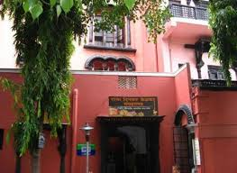
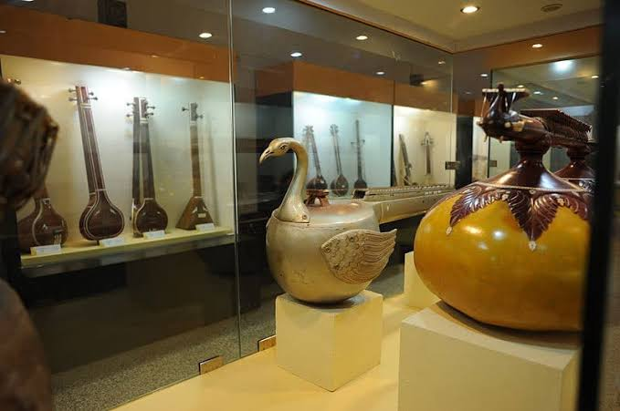
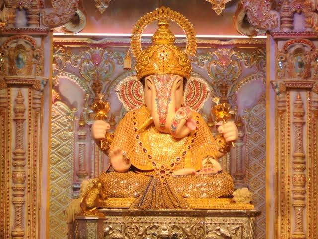
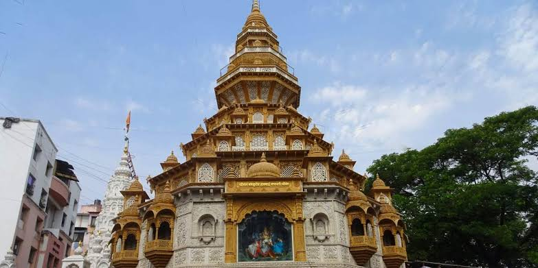

Shaniwar Wada
Shaniwarwada is a historical fortification in the city of Pune in Maharashtra, India. Built in 1732, it was the great seat of the Peshwas of the Maratha Empire until 1818. Following the rise of the Maratha Empire, the palace became the center of Indian politics in the 18th century. The fort itself was largely destroyed in 1828 by an unexplained fire, but the surviving structures are now maintained as a tourist site.


Raja dinkar kelkar museum
The Raja Dinkar Kelkar Museum is in Pune, Maharashtra, India. It contains the collection of Dr. Dinkar G. Kelkar (1896–1990), dedicated to the memory of his only son, Raja. The collection was started around 1920 and by 1960 it contained around 15,000 objects. The museum was established in 1962, and Dr. Kelkar donated his collection to the Government of Maharashtra in 1975. The museum now holds over 20,000 objects of which 2,500 are kept on display.
 Dagduseth Temple
Shreemant Dagadusheth Halwai Ganapati Temple in Pune is dedicated to the Hindu God Ganesh. The temple is popular in Maharashtra and is visited by over hundred thousand pilgrims every year. Devotees of the temple include celebrities and Chief Ministers of Maharashtra who visit during the annual ten-day Ganeshotsav festival. The main Ganesh idol is insured for sum of ₹1 Crore INR. The temple celebrated 125 years of its Ganapati in the year 2017.
 Sinhagad Fort (30 km)
Sinhagad is a hill fortress located at around 35 km southwest of the city of Pune, India. Some of the information available at this fort suggests that the fort could have been built 2000 years ago. Previously known as Kondhana, the fort had been the site of many battles, most notably the Battle of Sinhagad in 1670.